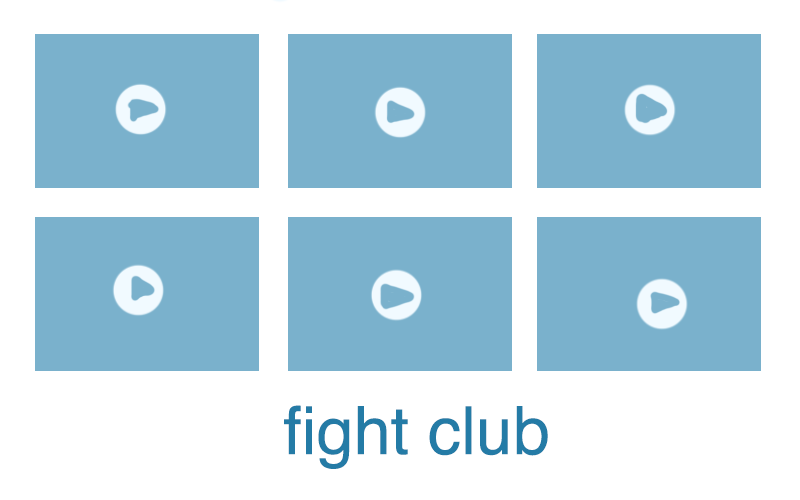

my idea is that it will take clips of fights from the wayback machine and it focuses on the voyuerism and intrigue of fights. it will be thumbnails of fights published on a platform (such as tumblr?)